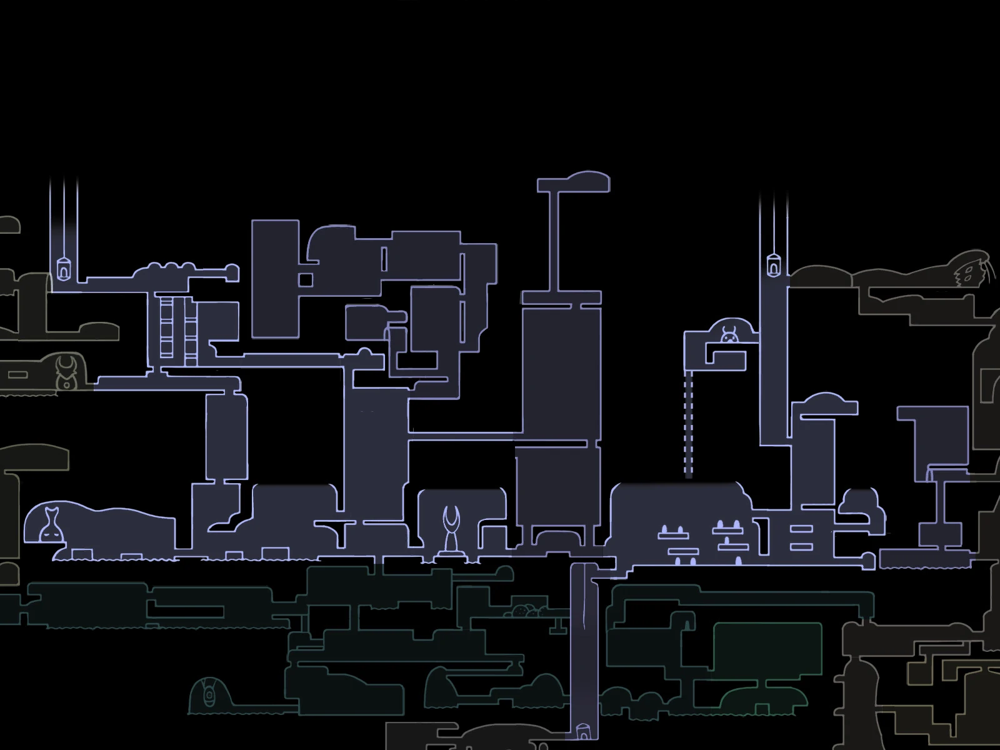
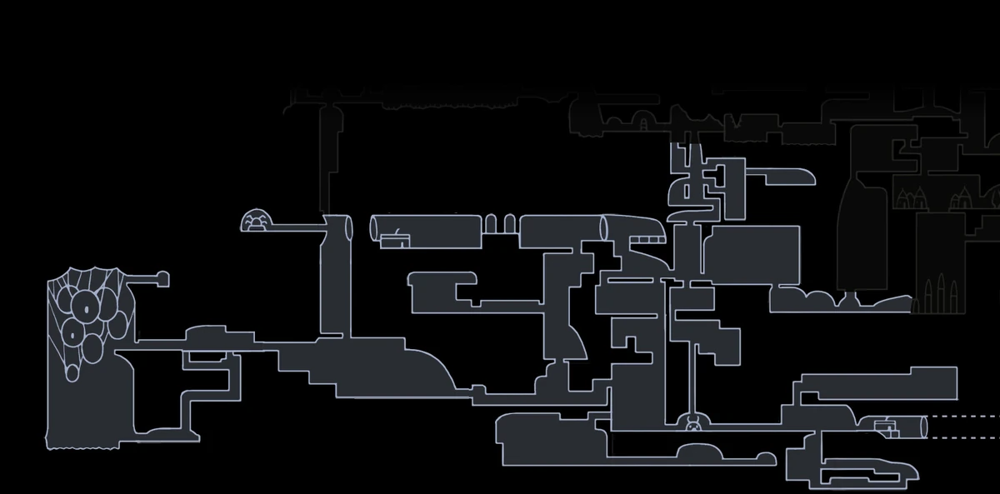

Geografía del Reino Caído
Ciudad de Lágrimas

El antiguo corazón de Hallownest. Una urbe monumental, siempre bañada por una lluvia incesante. Aquí reside el espíritu de Monomon, una de las Tres Soñadoras.
Nidos Profundos

Una zona oscura y claustrofóbica llena de criaturas araña y peligros ocultos. Es uno de los lugares más temidos del reino.